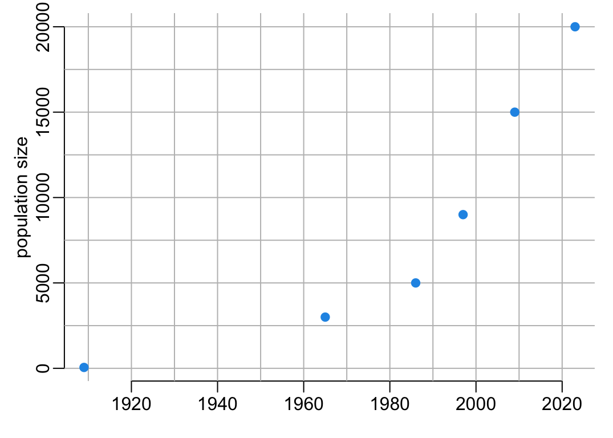
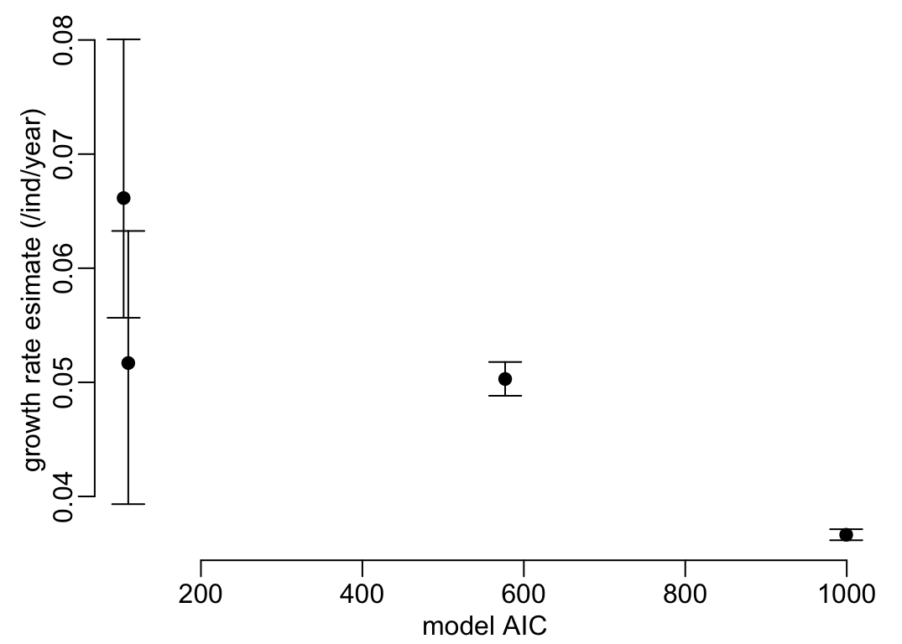
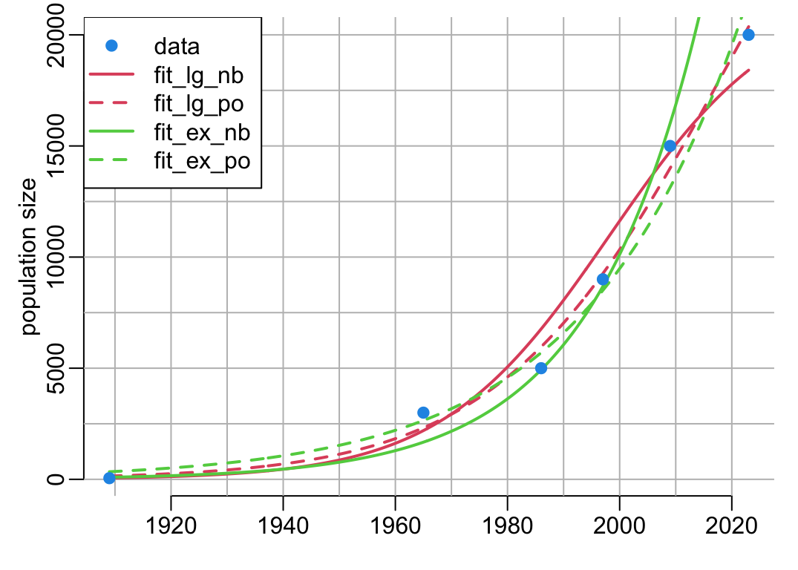
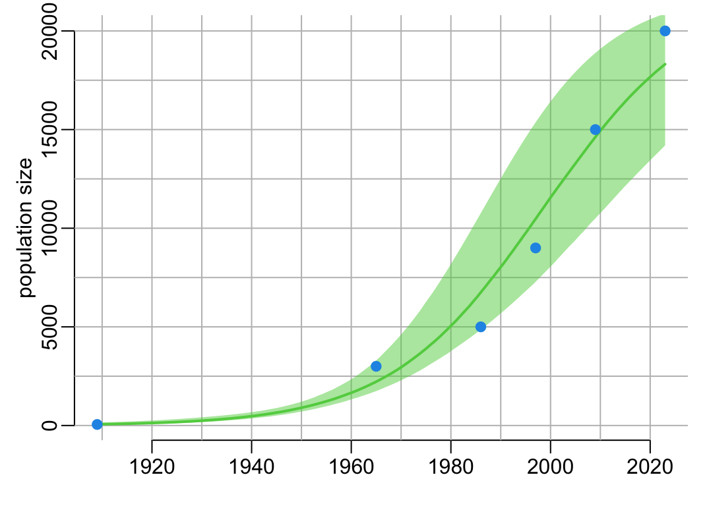
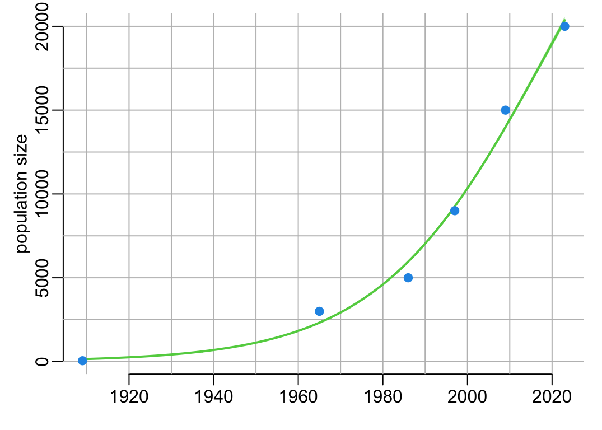
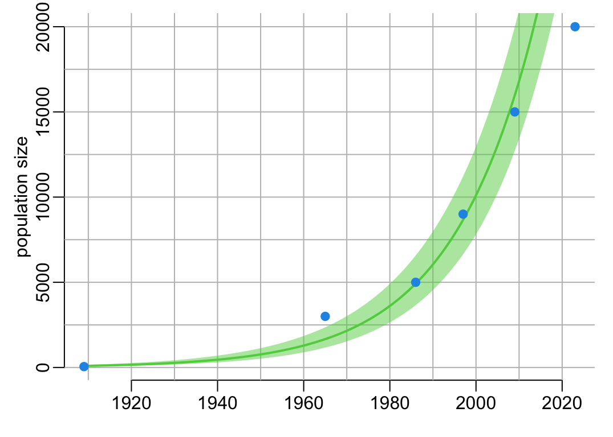
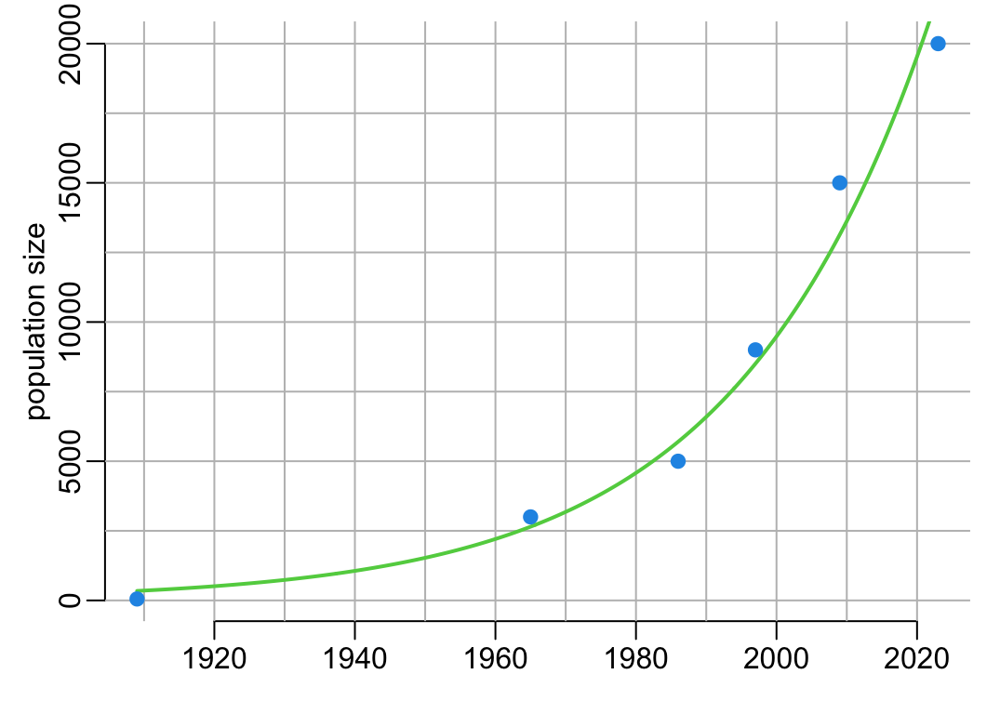
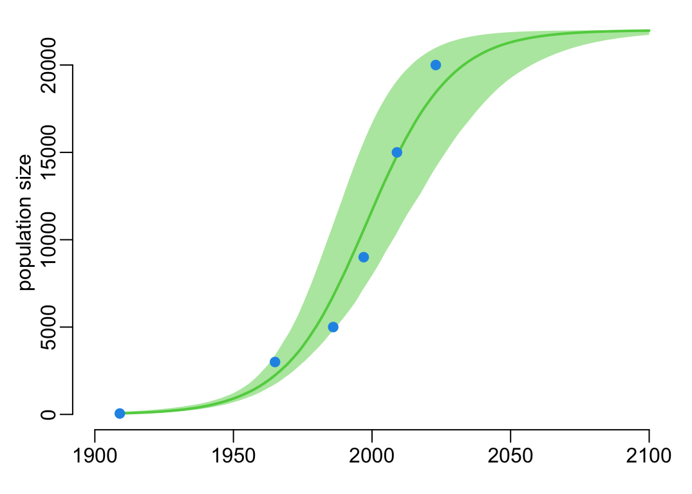

library(dplyr)
library(purrr)
library(tidyr)
library(bbmle)
library(mvtnorm)Fitting population growth by maximum-likelihood
1 Packages
2 Functions
Defining a large value for infinity:
inf <- 1e6Tuning lines():
lines2 <- function(...) lines(..., lwd = 2)Tuning polygon():
polygon2 <- function(x, y1, y2, ...) {
polygon(c(x, rev(x)), c(y1, rev(y2)), border = NA, ...)
}Tuning mle2() with the Nelder-Mead optimization algorithm:
mle3 <- function(...) mle2(..., method = "Nelder-Mead", control = list(maxit = 1e4))Tuning mutate():
mutate2 <- function(...) mutate(..., .keep = "none")3 Data
The data:
counts <- tibble(t = c(1909, 1965, 1986, 1997, 2009, 2023),
N = c(52, 3000, 5000, 9000, 15000, 20000))A function that draws the layout of the plot based on the data:
plot_grid <- function() {
with(counts, plot(t, N, type = "n", xlab = NA, ylab = "population size"))
abline(v = seq(1910, 2020, 10), col = "grey")
abline(h = seq(0, 20000, 2500), col = "grey")
}Adds points:
add_data_points <- function() with(counts, points(t, N, col = 4, pch = 19))A figure of the data:
plot_grid()
add_data_points()
4 Model
4.1 Demographic growth
The logistic growth process:
\[ \mu(t) = \frac{K}{1 + e^{-(t - t_0)r}} \]
where \(\mu\) is the expected population size, \(t\) is time in years, \(K\) is the carrying capacity, \(r\) is the annual per-capita growth rate, and \(t_0\) is the time where \(\mu(t_0) = K / 2\). Note that a particular case of the logistic growth model is the exponential growth:
\[ \lim_{K \to \infty} \frac{K}{1 + e^{-(t - t_0)r}} = e^{(t - t_0)r} \]
where this time \(t_0\) is the the time where \(\mu(t_0) = 1\). The corresponding R code:
logistic <- function(t, K, r, t0) {
K / (1 + exp(-(t - t0) * r))
}4.2 Errors distribution
Let’s model the distribution of errors around the mean by a negative binomial distribution:
\[ N(t) \sim \mbox{NB}\left(\mu(t), k\right) \]
where \(N\) is the observed population size, \(k\) is the dispersion parameter. Note that a particular case of the negative binomial distribution is the Poisson distribution:
\[ \lim_{k \to \infty} \mbox{NB}\left(\mu(t), k\right) = \mbox{Poisson}\left(\mu(t)\right) \]
4.3 Likelihood
By combining the demographic growth model and the distribution of errors we can express the likelihood function with is the probability that the observed data have been generated by the model. Assuming that the main source of stochasticity is observation process (as opposed to process), observations can be considered independent and the likelihood function of the data set can thus be expressed as so:
\[ L(r, K, t_0, k) = \prod_{i = 1}^n \frac{\Gamma(N_i + k)}{\Gamma(k)\,N_i!} \left(\frac{k}{k + \mu_i}\right)^{k} \left(\frac{\mu_i}{k + \mu_i}\right)^{N_i} \] where \(n\) is the number of data points in the data set, \(N_i\) is the observed population size for the ith data point, and \(\mu_i\) is the expected population size predicted by the model at \(t = t_i\), \(t_i\) being the time value of the ith data point. The corresponding R code for the minus log-likelihood is:
mLL <- function(K, r, t0, k) {
- sum(dnbinom(counts$N, k, mu = logistic(counts$t, K, r, t0), log = TRUE))
}5 Estimations
Let’s here estimate the 4 parameters of the model by maximizing the likelihood on the data set of 6 observations. In doing som we will consider 4 sub-models: exponential and logistic growth, each with negative binomial or Poisson distribution of errors, with corresponding numbers of parameters 2, 3 or 4.
The full model (4 parameters, logistic growth and negative binomial distribution):
fit_lg_nb <- mle3(mLL, list(K = max(counts$N), r = .1, t0 = median(counts$t), k = 100))The null model (2 parameters, exponential growth and Poisson distribution):
fit_ex_po <- mle3(mLL, list(r = 0.03, t0 = 2130),
fixed = list(K = inf, k = inf))And two 3-parameter models in between with: exponential growth with negative binomial distribution:
fit_ex_nb <- mle3(mLL, list(r = .1, t0 = median(counts$t), k = 100),
fixed = list(K = inf))and logistic growth with Poisson distribution:
fit_lg_po <- mle3(mLL, list(K = max(counts$N), r = .1, t0 = median(counts$t)),
fixed = list(k = inf))Lets do models comparisons by likelihood ratio tests. First,
anova(fit_ex_po, fit_ex_nb)Likelihood Ratio Tests
Model 1: fit_ex_po, [..1]: r+t0
Model 2: fit_ex_nb, [..1]: r+t0+k
Tot Df Deviance Chisq Df Pr(>Chisq)
1 2 995.33
2 3 103.98 891.35 1 < 2.2e-16 ***
---
Signif. codes: 0 '***' 0.001 '**' 0.01 '*' 0.05 '.' 0.1 ' ' 1and
anova(fit_ex_po, fit_lg_po)Likelihood Ratio Tests
Model 1: fit_ex_po, [..1]: r+t0
Model 2: fit_lg_po, [..1]: K+r+t0
Tot Df Deviance Chisq Df Pr(>Chisq)
1 2 995.33
2 3 570.86 424.47 1 < 2.2e-16 ***
---
Signif. codes: 0 '***' 0.001 '**' 0.01 '*' 0.05 '.' 0.1 ' ' 1rule out the null model. Next
anova(fit_ex_nb, fit_lg_nb)Likelihood Ratio Tests
Model 1: fit_ex_nb, [..1]: r+t0+k
Model 2: fit_lg_nb, [..1]: K+r+t0+k
Tot Df Deviance Chisq Df Pr(>Chisq)
1 3 103.976
2 4 96.229 7.7471 1 0.00538 **
---
Signif. codes: 0 '***' 0.001 '**' 0.01 '*' 0.05 '.' 0.1 ' ' 1and
anova(fit_lg_po, fit_lg_nb)Likelihood Ratio Tests
Model 1: fit_lg_po, [..1]: K+r+t0
Model 2: fit_lg_nb, [..1]: K+r+t0+k
Tot Df Deviance Chisq Df Pr(>Chisq)
1 3 570.86
2 4 96.23 474.63 1 < 2.2e-16 ***
---
Signif. codes: 0 '***' 0.001 '**' 0.01 '*' 0.05 '.' 0.1 ' ' 1show that the full model rules out the two intermediate models.
coef(fit_lg_nb)["r"] r
0.06614667 Note however that the support of the logistic model compared to the exponential one remains to some extend weak, as suggested by the failure to compute the confidence interval of the \(K\) parameter:
confint(fit_lg_nb) 2.5 % 97.5 %
K NA NA
r 5.565739e-02 8.005424e-02
t0 1.981316e+03 2.021324e+03
k 7.230725e+00 6.741760e+01Let’s now look at the differences on the growth rate \(r\) estimations between the four models. For that, let’s use this function that extracts the relevant information from a model fit:
extract_r <- function(x) {
ci <- confint(x)["r", ]
tibble(AIC = AIC(x), r = coef(x)["r"], lower = ci[1], upper = ci[2])
}Let’s run this function on our four model fits:
models <- mget(c("fit_lg_nb", "fit_ex_po", "fit_ex_nb", "fit_lg_po"))
(r_estimates <- models |>
map_dfr(extract_r, .id = "model") |>
arrange(AIC))# A tibble: 4 × 5
model AIC r lower upper
<chr> <dbl> <dbl> <dbl> <dbl>
1 fit_lg_nb 104. 0.0661 0.0557 0.0801
2 fit_ex_nb 110. 0.0517 0.0393 0.0633
3 fit_lg_po 577. 0.0503 0.0488 0.0518
4 fit_ex_po 999. 0.0366 0.0362 0.0371A visualization of the above table:
with(r_estimates, {
plot(AIC, r, ylim = c(min(lower), max(upper)), pch = 19,
xlab = "model AIC", ylab = "growth rate esimate (/ind/year)")
arrows(AIC, lower, AIC, upper, .1, 90, 3)
})
which shows that over-simplistic models substantially under-estimate the growth parameter \(r\) and also tend to be over-optimistic on the precision of their estimation. Let’s visually compare the models predictions:
t_new1 <- with(counts, seq(min(t), max(t), le = 512))
model_predictions <- function(x) with(as.list(coef(x)), logistic(t_new1, K, r, t0))Let’s compare the fits:
m_order <- c(1, 4, 3, 2)
colors <- c(2, 2, 3, 3)
ltypes <- c(1, 2, 1, 2)
plot_grid()
models[m_order] |>
map(model_predictions) |>
list() |>
c(list(colors, ltypes)) |>
pwalk(\(x, y, z) lines2(t_new1, x, col = y, lty = z))
add_data_points()
legend("topleft", c("data", names(models[m_order])), col = c(4, colors),
lty = c(NA, ltypes), lwd = c(NA, rep(2, 4)), pch = c(19, rep(NA, 4)))
A function that computes the confidence interval of a fitted model:
pred_ci <- function(fit, t_new = t_new1, B = 1000, ci = .95) {
lower <- (1 - ci) / 2
vc_mat <- vcov(fit)
pars <- coef(fit)
rnames <- rownames(vc_mat)
check_K <- function(x) {
if ("K" %in% rnames) return(x)
mutate(x, K = pars["K"])
}
B |>
rmvnorm(pars[rnames], vc_mat) |>
as_tibble() |>
check_K() |>
group_split(row_number(), .keep = FALSE) |>
map_dfc(~ with(.x, logistic(t_new, K, r, t0))) |>
ungroup() |>
rowwise() |>
mutate2(q = list(quantile(c_across(everything()), c(lower, .5, 1 - lower)))) |>
unnest_wider(q)
}where B is the number of simulations and ci is the value of the confidence interval. A function that adds prediction intervals:
add_pred <- function(x, t_new = t_new1, color = 3, alpha = .5) {
polygon2(t_new, x[[1]], x[[3]], col = adjustcolor(color, alpha))
lines2(t_new, x[[2]], col = color)
}Let’s compute the confidence intervals:
pred_lg_nb <- pred_ci(fit_lg_nb)
pred_lg_po <- pred_ci(fit_lg_po)
pred_ex_nb <- pred_ci(fit_ex_nb)
pred_ex_po <- pred_ci(fit_ex_po)And let’s visualize them:
plot_grid()
add_pred(pred_lg_nb)
add_data_points()
plot_grid()
add_pred(pred_lg_po)
add_data_points()
plot_grid()
add_pred(pred_ex_nb)
add_data_points()
plot_grid()
add_pred(pred_ex_po)
add_data_points()
Let’s consider an extrapolation to 2100:
t_new2 <- seq(min(counts$t), 2100, le = 512)Let’s use the best model to compute extrapolations up to 2100:
pred_lg_nb2 <- pred_ci(fit_lg_nb, t_new2)which gives:
plot(NA, xlim = c(1900, 2100), ylim = c(0, max(pred_lg_nb2$`97.5%`)),
xlab = NA, ylab = "population size")
add_pred(pred_lg_nb2, t_new2)
add_data_points()